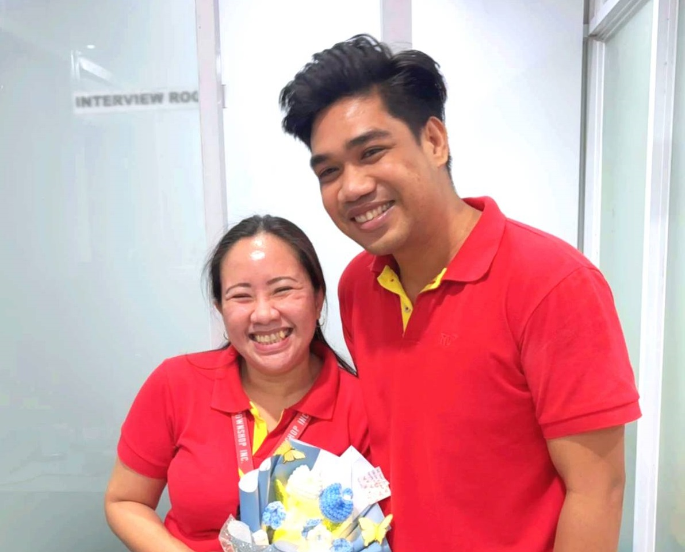
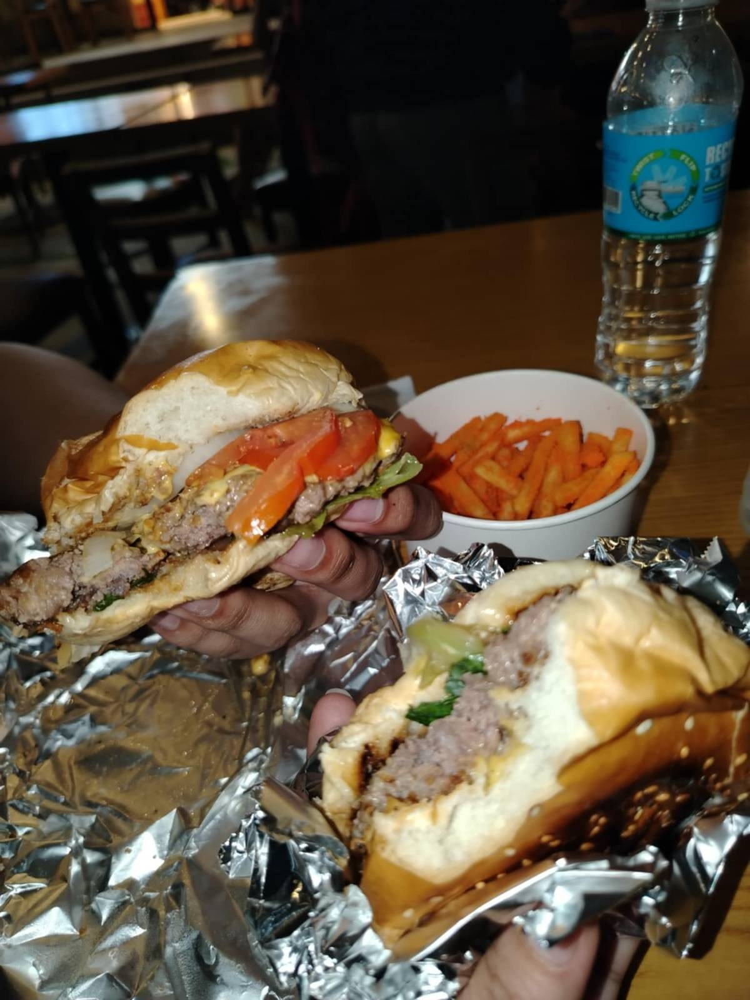

When it
Begins

The First Meeting (August 23, 2024)
It was just another ordinary lunch break under the heat of the August sun. The smell of fried chicken and freshly cooked rice lingered in the air as office workers gathered at the neighborhood’s favorite chicken carenderia. That’s when it happened, I saw her for the first time.
We didn’t know each other back then, but something about her presence pulled my attention. Maybe it was her lively laugh or the way her voice carried warmth even in casual conversation. Our co-workers wasted no time stirring the pot, throwing playful teases my way: “Uy, ligawan mo na ’yan!” they said, nudging and winking.
She laughed it off, flashing that beautiful smile, and said, “Ay naku, I’m not into younger guys.” Her words were direct and honest, like she always is, but I felt a little sting inside. Disappointed, I stayed quiet, too shy to respond, but deep inside, something had already begun to stir.
Teasing and Silent Glances
The teasing never stopped. Days turned to weeks, and every lunch or coffee break brought with it a new round of jokes and “matchmaking” from our ever-enthusiastic co-workers. I always stayed silent, laughing nervously, blushing behind my plate. I wasn’t the kind of guy who made bold moves. I was reserved, quiet, and unsure how to respond to this sudden attention.But she, she was different. She was talkative, friendly, and always full of life. She’d make the office feel warmer, lighter. She didn’t treat me like I was a kid. She treated me like someone worth talking to. Every moment shared—no matter how brief—began to mean more.

The Glass Wall (December 6, 2024)
Our workspaces were separated by a single transparent glass wall. One day, something new appeared taped to it, a small piece of paper with a message from the others. It started as a joke, a way to keep the teasing alive. Then more messages followed, playful and silly, like notes passed in a classroom.It all led to a dare: “Go to Sto. Niño Church together.” And surprisingly, she agreed.
That simple, playful dare changed everything.

The Church and Jollibee
We went to Sto. Niño Church together. It felt surreal, peaceful, sacred, like the universe was giving us a quiet moment to realize what was growing between us. After the visit, we walked side by side through the streets of Cebu City, the lights of December beginning to glow.We ended up having dinner at Jollibee, just the two of us. I watched her talk, her eyes full of energy, her laugh contagious. Everything around me blurred. The store slowly emptied. Closing time came, but we just kept talking—about life, family, little things. I didn’t want the night to end. When I finally went home, I couldn’t stop smiling. My heart felt light, full, and happy.

A Helping Hand and Heavy Groceries (December 24, 2024)
Christmas Eve came, and she invited me to help with groceries. I didn’t expect her to buy so much, but I didn’t complain. My arms nearly fell off, but her smile made it worth every aching muscle. My god, I had muscle pain for two days, but I'd carry those groceries again without hesitation.We delivered everything to her uncle’s house, where her whole family had gathered. It felt warm and joyful, like stepping into a home filled with love and tradition. I was a guest, but they made me feel welcome. And I realized something important: I didn’t just like her, I was falling for her.
Asking the Father
As the night ended, my heart raced. I knew I had to do something brave. I approached her father quietly and asked, “Pwede po ba manligaw sa anak niyo?”He looked at me, then simply said, “It’s okay.” My heart almost exploded with joy.
She turned red, her face full of surprise, maybe even a little embarrassment, but her eyes shone differently that night. And in that moment, I knew: this was the beginning.

When It Begins
That was the moment everything changed. We started talking more. Chatting through the nights. Sharing thoughts, laughs, and little pieces of our daily lives. Every message brought us closer. Every day, we learned more about each other, our quirks, our dreams, our fears.Love didn’t come in a flash of fireworks or grand gestures. It grew slowly, sweetly, like a flower blooming in soft light. What started with teasing turned into genuine care. What began as a joke became something we both took seriously.
And now, as time continues, we’re still growing, still learning, still loving, stronger with every trial, happier with every shared memory.
Because when it begins with something real, it never really ends.